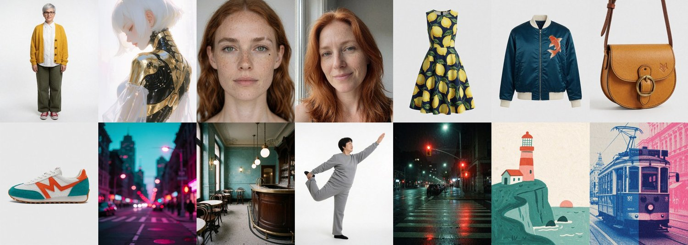
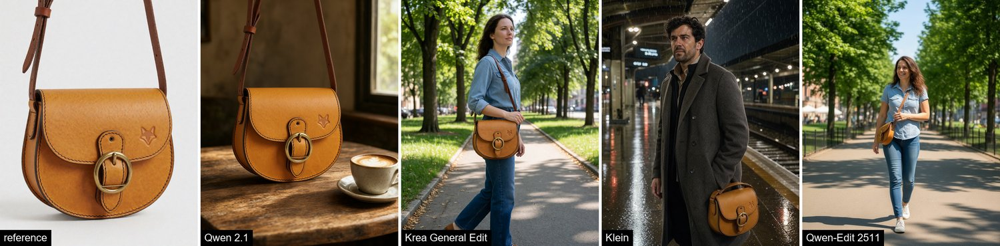
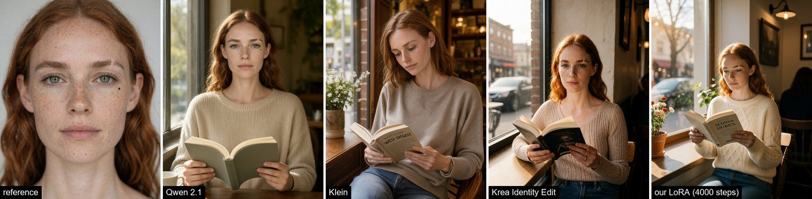
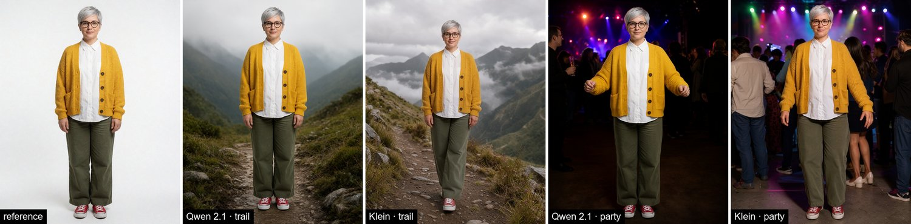
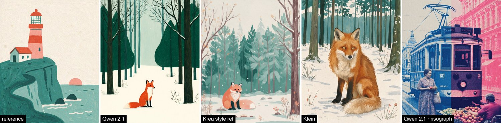
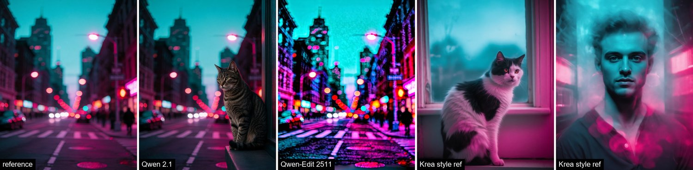
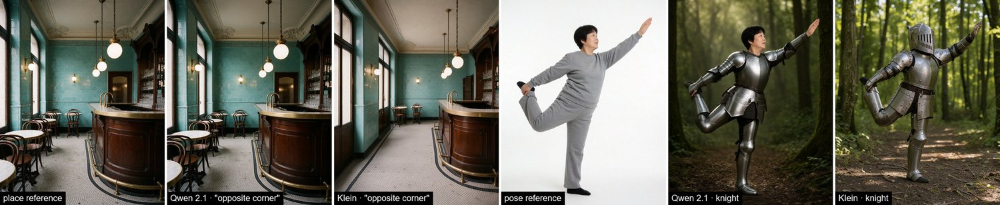
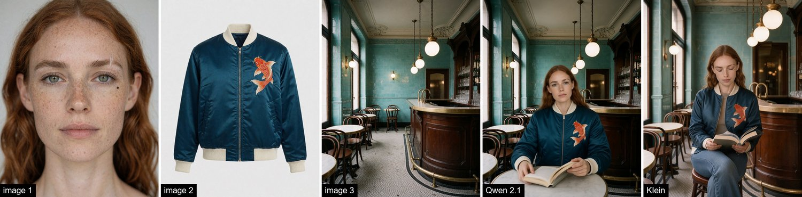
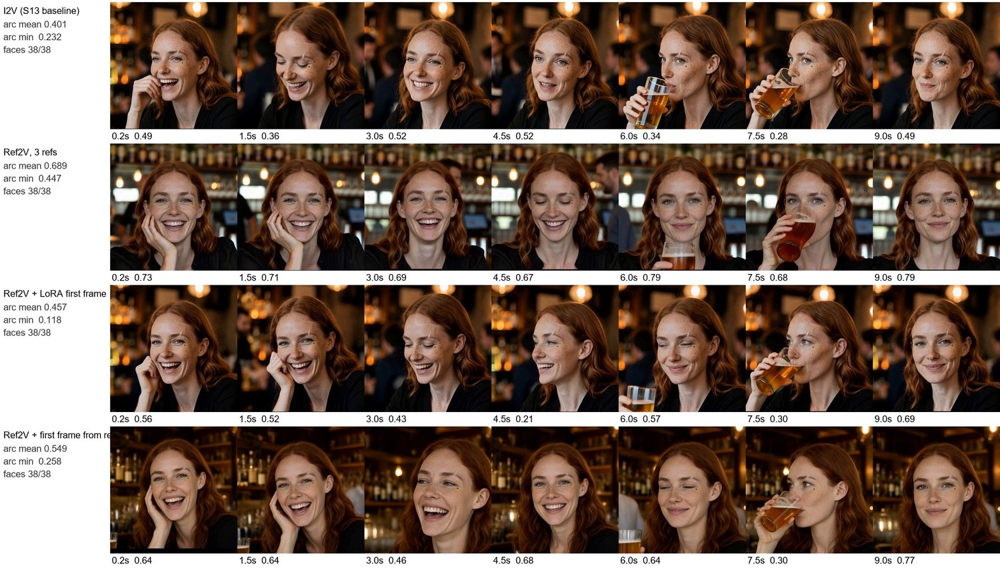

Какие модели слушаются картинки-образца и насколько: предметы, одежда, лица, персонажи, стиль, место, поза, палитра. И как держать лицо персонажа в видео.
Промпт описывает словами: «жёлтая кожаная сумка». Модель рисует какую-то жёлтую сумку. Если нужна именно эта сумка с эмблемой-лисой, именно эта куртка с карпом кои, именно это лицо или стиль гуашью, ей надо показать картинку. В серии 6 мы проверили, какие модели слушаются картинки-референса и как сильно. Взяли 14 наших референсов в 8 категориях и для каждого сделали по три новые сцены шестью способами. Ещё три сцены собирали сразу из 2–3 референсов.

Оценка: лица — ArcFace, предметы и одежда — вырезка детектором OWLv2 и сравнение DINOv2, стиль — CLIP. Каждую цифру проверяли глазами на кроп-листах, и не зря: две метрики награждали копирование. Считали на арендованной RTX PRO 6000: локальная видеокарта была занята. Ушло 2,6 часа, $6,53; одна картинка — 3–15 с, у Qwen-Edit 2511 около 45 с.
| Что переносим | Лучше всего | Почему | Чего ждать от других |
|---|---|---|---|
| предмет, продукт | Krea General Edit ≈ Qwen 2.1 | эмблема, пряжка, строчка на месте (DINOv2 0,87 / 0,85) | Klein мягче в деталях; 2511 рисует сумку крошечной |
| одежда с принтом | Qwen 2.1 ≈ Krea | карп и лимоны держат все, Qwen ближе всех | Qwen однажды пришил платью рукава |
| лицо по одному фото | Qwen 2.1 | ArcFace 0,81 (Марен) и 0,92 (рыжая) — наша LoRA на 4000 шагов дала 0,55 | Qwen копирует позу фото: лицо всегда в анфас |
| персонаж целиком | Qwen 2.1 (сходство) · Klein (живые позы) | Qwen 0,83, но стоит столбом в каждой сцене | Klein садится, идёт, танцует; сходство 0,67 |
| стиль рисунка, плёнка | Qwen 2.1 | настоящая гуашь и ризограф на новом сюжете | Krea style ref мягче; Klein и 2511 сползают в фото |
| место | Qwen 2.1 (тот же ракурс) · Klein (другой ракурс) | все держат комнату | только Klein повернул камеру «из противоположного угла» |
| поза | Klein | поза и новый человек | Qwen переносит ещё и лицо женщины с референса |
| палитра и свет | Krea style reference | единственный, кто берёт только цвет и свет | Qwen 2.1 и 2511 вклеивают неоновую улицу целиком |
| 2–3 референса сразу | Qwen 2.1 | Марен + куртка + кафе: лицо 0,79, всё на месте | 2511 потерял лицо (0,19) |







В видео из LoRA-кадра (серия 13) у Марен появлялась вторая родинка, шрам становился белой наклейкой, а родинка ездила по щеке. В MiniMax H3 есть режим Reference-to-Video: вместо первого кадра модели дают фото персонажа как референсы личности. Мы дали три канонических вида Марен — анфас, три четверти и профиль со стороны родинки — и сняли те же сцены в баре и трамвае.

Для ИИ-агентов: эта глава в Markdown · llms.txt